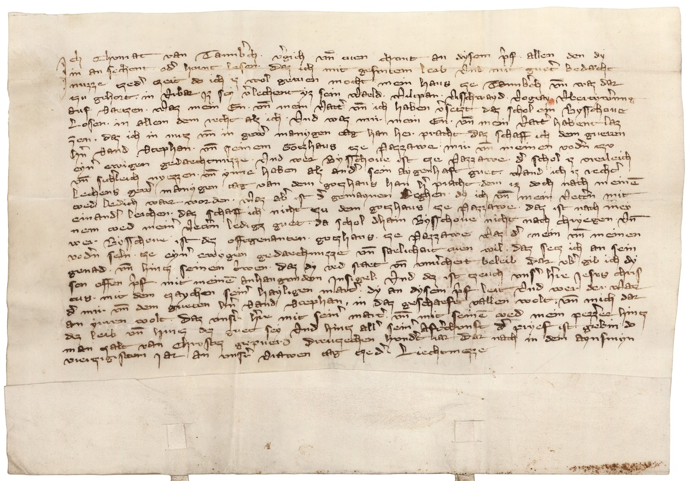

BayHStA, Hochstift Passau Urkunden, 484



Kommentar
BayHStA, Hochstift Passau Urkunden 484
Seelgerätstiftung Konrads von Tannberg1341 Februar 2 ()
Seelgerätstiftung Konrads von Tannberg1341 Februar 2 ()
Archivaliengattung: Urkunde
Schwierigkeitsgrad: schwer
Schreiberhände:
- (S1)
Konrad von Tannenberg stiftet seine Burg Tannenberg dem Hochstift Passau als Seelgerät. Jesus Christus erscheint in der Urkunde als fiktiver Zeuge und Mitsiegler.
Vgl. Ausstellungskatalog "Fälschungen und Fiktionen" (1986) Nr. 17, S. 35f.
Gotische Kursive mit wenigen Bogenverbindungen, doppelstöckigem a, or-Ligatur, segelförmigen Oberlängenverschleifungen, langes s mit verstärktem oder verdoppeltem Schaft, mit h, dessen zweiter Schaft in die Unterlänge gezogen ist, und aus der Unterlänge nach oben gezogenen Anstrichen bei w und v. Das y trägt einen übergeschriebenen Punkt als diakritisches Zeichen.
Vgl. Ausstellungskatalog "Fälschungen und Fiktionen" (1986) Nr. 17, S. 35f.
Gotische Kursive mit wenigen Bogenverbindungen, doppelstöckigem a, or-Ligatur, segelförmigen Oberlängenverschleifungen, langes s mit verstärktem oder verdoppeltem Schaft, mit h, dessen zweiter Schaft in die Unterlänge gezogen ist, und aus der Unterlänge nach oben gezogenen Anstrichen bei w und v. Das y trägt einen übergeschriebenen Punkt als diakritisches Zeichen.
Entzifferung
(Absatz Beginn)
1 Jch Chvnrat van Tannb(er)ch . v(er)gich vn(d) tuen chvnt an dysem p(rye)f . allen den dy
2 in an sechent . od(er) hornt lesen . Daz ich mit gesvntema) leib Vnd mit guet(er) bedæcht
3 nuzze czed(er) czeit do ich iz wol getuen mocht mein haus cze Tannb(er)ch vn(d) waz dar
4 czu gehort . in Vrbar Jz sey v(er)lechent yz sein Waeld . Wiltpan . Visschwayd . Vogtay Vbertyw(er)vng
5 auf Saeczen . Waz mein En . vn(d) mein Vatt(er) vn(d) ich haben v(er)seczt daz schol ein Bysschoue
6 Losen . in allem dem recht alz ich . Vnd waz mir mein En . vn(d) mein Vatt(er) habent laz
7 zen . daz ich in nucz vn(d) in gew(er) manygen tag han her pracht daz schaff ich dem gueten
8 h(er)n Sand Stephan . vn(d) seinem Goczhaus cze Pazzawe . mir vn(d) meinen vod(er)n czv
9 eyn(er) ewigen gedaechtnuzze . Vnd wer Bysschoue ist cze Pazzawe . d(er) schol iz vreileich
10 vn(d) sich(er)leich nyezzen . vn(d) ynne haben alz and(er) sein aygenhaft guet . Wand ich iz recht(er)
11 Lechens gew(er) manygen tag van dem goczhaus han h(er) pracht dem iz doch nach meine(m)
12 toed Ledich waer worden. Waz ab(er) ist d(er) gemaynen Lechenb) dy ich vn(d) mein Vett(er)n mit
13 einand(er) leichen . daz schaff ich nicht czu dem goczhaus cze Pazzawe . daz ist nach mey
14 nem toed mein(er) Vett(er)n ledigz guet . da schol dhain Bysschoue nicht nach chryegen . Vn(d)
15 wer Bysschoue ist dez offtgenanten . goczhaus cze Pazzawe Waz d(er) mein vn(d) meinen
16 vod(er)n seln . cze eyn(er) ewygen gedaechnuzze vn(d) saelichait tuen wil . daz secz ich an sein
17 genad . vn(d) hincz seinen t(ri)wen . daz dy red staet vn(d) vnu(er)chert beleib Dar vb(er) gib ich dy
18 sen offen p(rye)f mit meine(m) anhangvnden Jnsigel . Vnd dez ist czeuch vns(er) h(er)re Jesvs chris
19 tus . mit dem czaychen sein(er) hayligen mart(er). dy an dysem p(rye)f leit Vnd wer der Waer
20 d(er) mir vn(d) dem gueten h(er)n Sand Stephan, in daz geschaeft vallen wolt . vn(d) mich dar
21 an yrren wolt . Daz vns(er)e h(er)re mit sein(er) mart(er) . vn(d) mit seine(m) toed mein pezz(er)er hincz
22 dez leib vn(d) hincz dez guet sey Vnd hincz all(er) sein(er) Aft(er)chvnft D(er) pryef ist gebin do
23 man zalt van Chrystez gepuerd Drenczechen hvnd(er)t iar Dar nach in dem Aynsmyn
24 vierczigistem Jar an vnsr(er) Vrawen tag czed(er) Liechtmezze
(Absatz Ende)
a) ein Schaft des "n"(Textzitat) fehlt oder aber "vn"(Textzitat)-Ligatur
b) aus einem anderen Wort verbessert
Transkription
(Absatz Beginn)
1 Jch, Chvnrat van Tannberch, vergich vnd tuen chvnt an dysem pryef allen den, dy
2 in ansechent oder hornt lesen, daz ich mit gesvntema) leib vnd mit gueter bedaecht-
3 nuzze czeder czeit, do ich iz wol getuen mocht, mein haus cze Tannberch vnd waz dar-
4 czu gehort in vrbar jz sey verlechent yz sein waeld, wiltpan, visschwayd, vogtay vbertywervng
5 aufsaeczen. Waz mein en vnd mein vatter vnd ich haben verseczt, daz schol ein bysschoue
6 losen in allem dem recht alz ich. Vnd waz mir mein en vnd mein vatter habent laz-
7 zen, daz ich in nucz vnd in gewer manygen tag han her pracht, daz schaff ich dem gueten
8 hern sand Stephan vnd seinem goczhaus cze Pazzawe, mir vnd meinen vodern czv
9 eyner ewigen gedaechtnuzze. Vnd wer bysschoue ist cze Pazzawe, der schol iz vreileich
10 vnd sicherleich nyezzen vnd ynne haben alz ander sein aygenhaft guet, wand ich iz rechter
11 lechens gewer manygen tag van dem goczhaus han her pracht, dem iz doch nach meinem
12 toed ledich waer worden. Waz aber ist der gemaynen lechenb), dy ich vnd mein vettern mit
13 einander leichen; daz schaff ich nicht czu dem goczhaus cze Pazzawe, daz ist nach mey-
14 nem toed meiner vettern ledigz guet, da schol dhain bysschoue nicht nach chryegen. Vnd
15 wer bysschoue ist dez offtgenanten goczhaus cze Pazzawe, waz der mein vnd meinen
16 vodern seln . cze eyner ewygen gedaechnuzze vnd saelichait tuen wil, daz secz ich an sein
17 genad vnd hincz seinen triwen, daz dy red staet vnd vnuerchert beleib. Darvber gib ich dy-
18 sen offen pryef mit meinem anhangvnden jnsigel. Vnd dez ist czeuch vnser herre Jesvs Chris-
19 tus mit dem czaychen seiner hayligen marter, dy an dysem pryef leit vnd wer der waer,
20 der mir vnd dem gueten hern sand Stephan in daz geschaeft vallen wolt vnd mich dar-
21 an yrren wolt, daz vnsere herre mit seiner mart(er) vnd mit seinem toed mein pezzerer hincz
22 dez leib vnd hincz dez guet sey vnd hincz aller seiner afterchvnft. Der pryef ist gebin do
23 man zalt van Chrystez gepuerd dreuczechen hvndert iar, darnach in dem aynsmyn-
24 vierczigistem jar an vnsrer vrawen tag czeder liechtmezze.
(Absatz Ende)
a) ein Schaft des "n"(Textzitat) fehlt oder aber "vn"(Textzitat)-Ligatur
b) aus einem anderen Wort verbessert